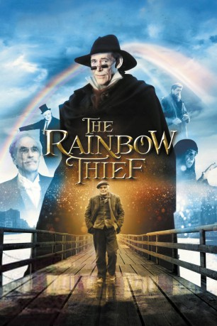

#9904 The Rainbow Thief
 
 IMDB-Wertung: 6.1 / 10
IMDB-Wertung: 6.1 / 10  Metascore: 0
Metascore: 0 
In einem Fantasie-London des viktorianischen Zeitalters heuert der alte Dieb und Betrüger Dima als Diener beim auf den Hund gekommenen und in der Kanalisation hausenden Prinz Meleagre an und kümmert sich um dessen Versorgung mit den Gütern des Alltags, worauf dieser ihm im Gegenzug zusichert, ihn dereinst beim Tode seines schwerreichen Onkels mit einem Anteil zu bedenken. Für diese vage Aussicht erträgt Dima tapfer allerhand Demütigungen durch den Spinner. Damit aber ist es vorbei, als der Onkel sein Geld den Huren stiftet.
Jahr: 1990
Dauer: 89 Minuten
FSK:
Land: England Studio: Arc FilmsTonspuren:
Untertitel:
Auflösung: 1080p (1920x1080) Größe: 10342 MB
Genre: Drama, Fantasy
Regisseur: Alejandro Jodorowsky
Drehbuch: Berta Domínguez D., Berta Domínguez D.
Soundtrack: Jean Musy
Darsteller:
 Peter O'Toole als Prince Meleagre
Peter O'Toole als Prince Meleagre Omar Sharif als Dima
Omar Sharif als Dima Christopher Lee als Uncle Rudolf
Christopher Lee als Uncle Rudolf- Linzi Drew als Madame Rainbow
- Ian Dury als Bartender
- Sheila Keith als Bernadette
- Jean-Yves Tual als Colonel Heywood
- Jude Alderson als Hortensia
- Brigitte Barclay als Rainbow Girl
- David Boyce als Clown
- Jane Chaplin als Lady Jane
- Brian Conway als Ambulance Attendant
- Carolyn Cortez als Rainbow Girl
 Peter Dennis als Winter
Peter Dennis als Winter- Joanna Dickens als Ambrosia
- Berta Domínguez D. als Tiger Lily
- Edward Donovan als Rolf
- Debbie Ferrari als Rainbow Girl
- Amanda Jane Forbes als Rainbow Girl
- Rachel Garley als Rainbow Girl
- Chris Greener als Caesar, the Healer
- Kay Hamilton als Miss Fenwick
- Brian Hibbard als Madame Claire
- Tom Hibbert als Ambulance Attendant
- Kirsten Fi-Fi Imrie als Rainbow Girl
- Stephen Jenn als Michelle
- Andy McEven als Barker
- Declan Mulholland als Pug
- Ken Parry als Snow
- Ian Ricketts als Casket
- Marion Turner als Rainbow Girl
- Kate Versey als Ambulance Attendant
Datei: X:\1990\Rainbow Thief, The (1990, FSK, 1920x1080).mkv seit 08.11.2018
Festplatte: HD 1987-1991
 Es gibt insgesamt 52 Filme in der Gruppe '1990'
Es gibt insgesamt 52 Filme in der Gruppe '1990'